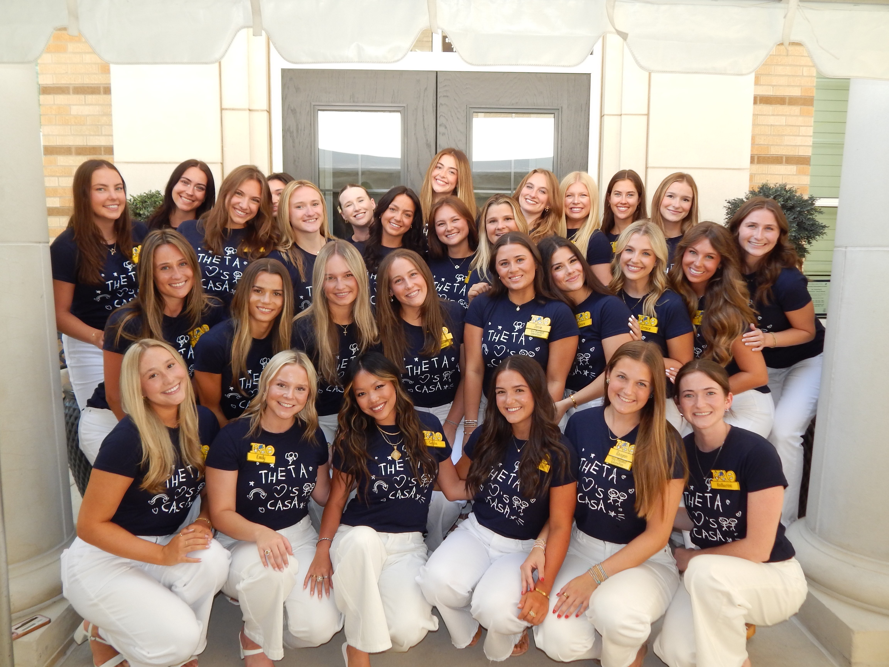

Welcome to My Portfolio
Hi y'all! My name's Cece Murphy, and I'm a senior journalism major minoring in DCDA. I am from the capitol of the great state of Nebraska: Lincoln. However, Fort Worth has become my second home!
Featured Work
I'm Cece Murphy, a senior at Texas Christian University majoring in journalism with a minor in DCDA. Growing up in Lincoln, Nebraska shaped me, but Fort Worth quickly became my second home the moment I set foot on TCU's campus. Through my classes and experiences, I've built a strong foundation in writing, storytelling, and media analysis, while also learning how to think critically about the role journalism plays in society. I'm especially drawn to work that lets me combine creativity with communication — whether that's reporting, writing, or content creation. Beyond academics, I bring energy, dedication, and a collaborative spirit to everything I do, and I'm excited to keep growing in spaces where I can make an impact through my words and ideas.
Current Learning
Even though it's only week two, I'm already starting to get a feel for how this class works and what I'll be building toward. Right now, we're focusing on the foundations of HTML: learning structure, syntax, and how to use semantic elements to make a page accessible and clear. The labs have helped me practice the basics by creating a simple personal webpage and experimenting with links, images, and lists. What I'm noticing is that this isn't just about coding. It's about thinking critically about design, accessibility, and how people interact with digital content. I like that we're connecting technical skills with the bigger picture of communication and public engagement, because it makes the assignments feel more purposeful and not just technical drills.